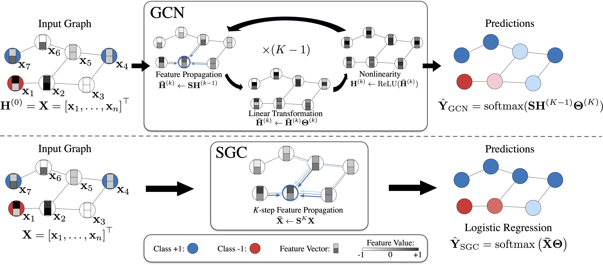
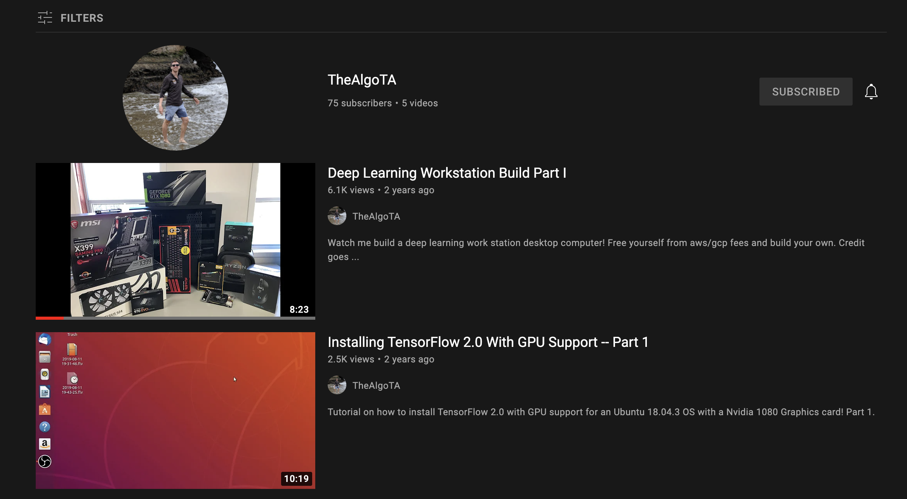
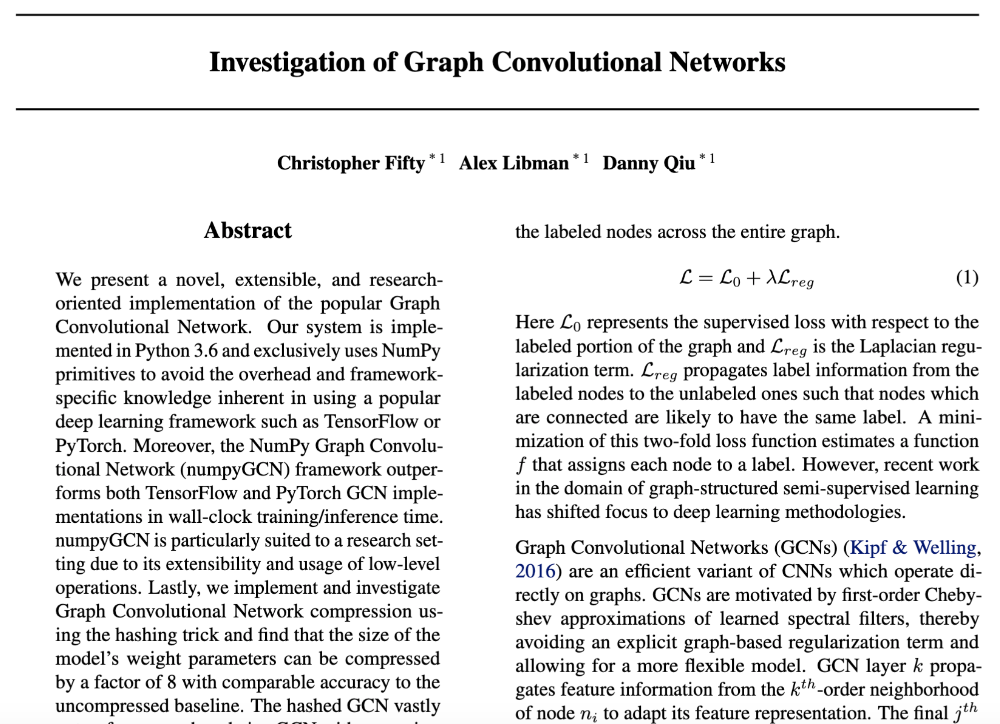
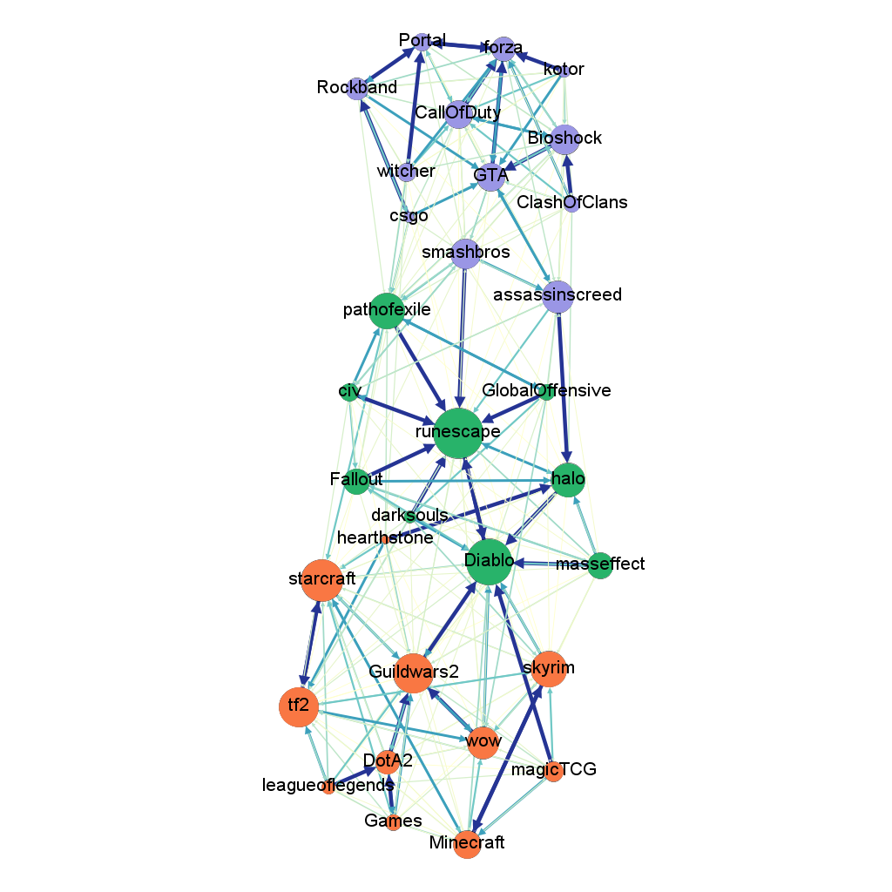

Chris Fifty
I am a Research Engineer in Google Brain. My research interests broadly center around transfer and multi-task learning, and my engineering focus is on developing high performance and large-scale multi-modal paradigms. Prior to Google, I obtained my bachelors and masters from Cornell University and worked in the research lab of Kilian Weinberger.
I am currently applying to doctoral programs and endeavor to advance research at the intersection of machine learning and the biological sciences. Advances in this domain will lead to the eradication of dementia, reduce the debilitating effects of cancer, and even significantly extend our natural lifespan and healthy years of life.
Google Scholar / CV / LinkedIn / Github
News
- [2021/10] Our research at Brain has been published in the Google AI blog! Tremendously thankful to Ehsan Amid, Zhe Zhao, Tianhe Yu, Rohan Anil, Chelsea Finn for their invaluable contributions to this effort!
- [2020/04] Moved from YouTube to Google Brain! Couldn't be more excited to join the team and push the boundaries of machine learning research!
- [2019/04] I'm off to Silicon Valley to work on the YouTube Algorithm for Google as a Machine Learning Engineer!
- [2019/01] I joined ASAPP as the first full-time employee (Research Intern) in the Ithaca Research extension working for Kilian Weinberger!
Invited Talks
- In October 2021, I gave a talk to Level 5 (formerly Lyft's self-driving division, now part of Toyota's) regarding multi-task learning for autonomous vehicles.
- In March 2021, I was invited by Waymo Research to give a talk on information transfer in multi-task learning systems.
Publications
Co-training Transformer with Videos and Images Improves Action Recognition
Bowen Zhang, Jiahui Yu, Christopher Fifty, Wei Han, Andrew Dai, Ruoming Pang, Fei Sha
arXiv preprint, 2021
arXiv
Efficiently Identifying Task Groupings for Multi-Task Learning
Christopher Fifty, Ehsan Amid, Zhe Zhao, Tianhe Yu, Rohan Anil, Chelsea Finn
Neural Information Processing Systems (NeurIPS), 2021 (Spotlight)
arXiv / code / blog
Step-size Adaptation Using Exponentiated Gradient Updates
Ehsan Amid, Rohan Anil, Christopher Fifty, Manfred K Warmuth
International Conference on Machine Learning (ICML), 2020
Beyond First Order Methods in Machine Learning Systems Workshop (Spotlight)
arXiv
Small Towers Make Big Differences
Yuyan Wang, Zhe Zhao, Bo Dai, Christopher Fifty, Dong Lin, Lichan Hong, Ed Chi
Proceedings of The Web Conference (WWW), 2022
arXiv
Simplifying graph convolutional networks
Felix Wu, Amauri Souza, Tianyi Zhang, Christopher Fifty, Tao Yu, Kilian Weinberger
International Conference on Machine Learning (ICML), 2019
arXiv / code
Broad-spectrum detection of all clostridial neurotoxins in stem cell‒derived neurons and identification of compounds that rescue synaptic activity in synaptic function‒based assays
Patrick McNutt, Michael Adler, Megan Lyman, Angela Adkins, Christopher Fifty, Phillip Beske
Toxicon, 2015
Research Highlights
Efficiently Identifying Task Groupings for Multi-Task Learning (NeurIPS 2021)
 We suggest an approach to select which tasks should train together in multi-task learning models. Our method determines task groupings in a single training run by co-training all tasks together and quantifying the effect to which one task's gradient would affect another task's loss.
We suggest an approach to select which tasks should train together in multi-task learning models. Our method determines task groupings in a single training run by co-training all tasks together and quantifying the effect to which one task's gradient would affect another task's loss.
Simplifying Graph Convolutional Networks (ICML 2019)
GCNs derive inspiration primarily from recent deep learning approaches, and as a result, may inherit unnecessary complexity and redundant computation. In this paper, we reduce this excess complexity through successively removing nonlinearities and collapsing weight matrices between consecutive layers.
Projects
ImagineArt.ai
 I founded a startup that transforms any picture into a work of art artificial intelligence. To save on GPU cloud computing costs, I built and host the deep learning server from my bedroom configured with a static IP from my ISP. The deep learning server communicates with a Firebase webserver via streaming GRPC and protobufs, and I wrote an improved neural style transfer algorithm that reduces runtime from 60 to 10 seconds. PJ deserves credit for coding up the Firebase webserver, front-end, and transaction processing logic. The logic of a customer going from their first stylization to the canvas arriving at their doorstep is fully automated.
I founded a startup that transforms any picture into a work of art artificial intelligence. To save on GPU cloud computing costs, I built and host the deep learning server from my bedroom configured with a static IP from my ISP. The deep learning server communicates with a Firebase webserver via streaming GRPC and protobufs, and I wrote an improved neural style transfer algorithm that reduces runtime from 60 to 10 seconds. PJ deserves credit for coding up the Firebase webserver, front-end, and transaction processing logic. The logic of a customer going from their first stylization to the canvas arriving at their doorstep is fully automated.
TheAlgoTA YouTube Channel
I create education machine learning content focusing on TensorFlow, hardware, and Natural Language Processing. My channel has around 75 subscribers, over 10,000 views, and around 330 hours of watch time.
Numpy GCN
Along with Danny Qiu and Alex Libman, I implemented a Graph Convolutional Network in Numpy. In particular, we derive and implement the backpropagation learning steps using only numpy primitives and without reliance on autograd. Our class writeup for CS 6787, Advanced Machine Learning Systems, also includes experiments with network compression on Numpy GCN layers using the hashing trick. This class was taught by Professor Chris De Sa at Cornell University in 2018.
LFG, MOB BAF: Propagation of Video Game Terminology Throughout Reddit
Along with Katherine Van Koevering, I exaimed the propagation of video game terminology across different subreddits. Specifically, we examined the phenomenon of a term originating in one subreddit and later transfering and being incorporated into the jargond of other (related) subreddits. This report was the final project of CS 6742, Natural Language Processing and Social Interaction, taught by Professor Cristian Danescu-Niculescu-Mizil at Cornell University in 2018.
Misc.
Conference Reviewer
Teaching Assistant
- CS 4740/5740, Natural Language Processing, taught by Claire Cardie in 2018
- CS 4820, Introduction to Analysis of Algorithms, taught by Eva Tardos in 2017